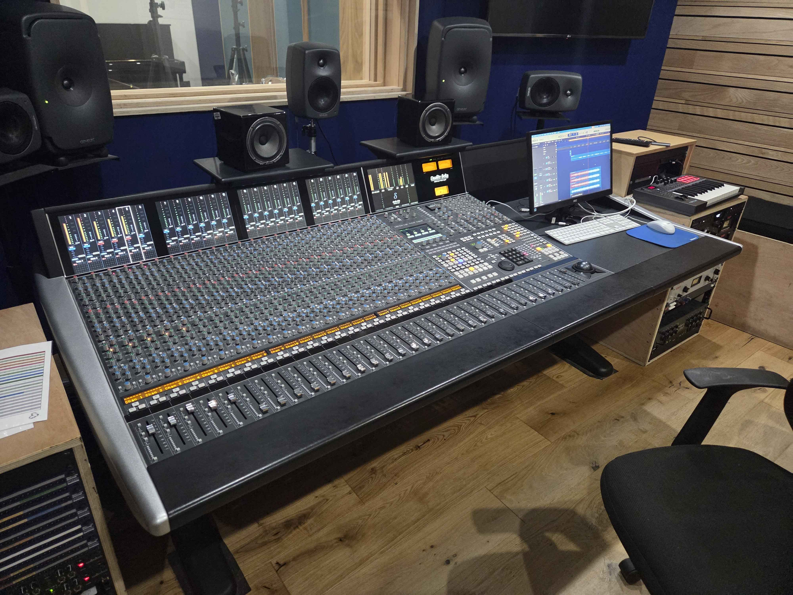

Picture of the ACM Birmingham SSL Studio
I am Chay Fisher, a sound engineer with experience in recording, mixing (incl. Atmos mixing) and mastering.
I have an A-level in music technology, as well as performance and industry, and am currently studying for a BSc in Sound Engineering.
Although I typically work in rock-adjacent genres, such as progressive rock and punk,
I also have experience in acoustic-based genres (such as folk), orchestral music and electronic music.
I’m based in the west-midlands (England) but am available for online work.
I typically work in Logic, but am also experienced in using Pro Tools, Cubase and a variety of other DAWs.
Some of my most notable work includes Atmos Mixing for Dreamboat Emperor, mixing for Firefly’s Scarlett Break,
and being an assistant engineer for some of the recordings for WUNDER RiKU’s Rise Again.
My current goals include working with as many up-and-coming artists and bands as I can
to build a wide variety of connections whilst providing said musicians with high-quality products at a reasonable price.
My goals for the future include raising the funds to run my own studio,
as well as having a chance to work alongside some of the bigger names in the industries and communities I aim to become a part of.
although a lot of my work is currently unreleased, I have worked with a variety of bands,
artists and composers, including, but not limited to:
composition/performance - rOnK
mixing - Chay Fisher
mastering - Chay Fisher, Ryan John
composition - Firefly/Ben Partridge
mixing - Chay Fisher
composition/performance - Valerian
mixing - Chay Fisher
no audio currently available
composition/performance - Dreamboat Emperor
original mix - Dreamboat Emperor
Atmos mix - Chay Fisher
Nothing to show (for now)
Nothing to show (for now)
Some of my recent projects include producing an EP with the band rOnK, the Scarlett Break mixes and helping with some recording sessions at Grosvenor Road Studios.
The rOnK EP included recording, mixing and mastering, most of which was either done in ACM Birmingham’s SSL Studio or from home.
I worked closely with the band’s bassist during the production process, including back and forth mix demoing to make sure the band were happy with the outcome.
Below are a few examples of old mixes to compare to the final product:
For Scarlett break, the songs had already been partially mixed,
and it was my job to make smaller improvements to clean the mix up and give it more textural depth,
as well as to provide a rough master to get the sound as close to complete as possible before the actual mastering.
I also led the recording sessions for the live guitar and cello, including the comping of the recordings.
I worked closely with the composer, sending around 10-20 demos per song to make sure it perfectly fit his vision for the project.
I won’t provide each demo, but I will provide a version of a song before my mix,
as well as one of the other mixes before the final version:
I have also recently helped with a recording session at Grosvenor Road Studios, in which we recorded grand piano.
I do not have access to the recordings myself as I was only an assistant, but I worked with the pianist to make sure he was happy with the recording takes we had
before the in-house engineer Tony worked through the comping process with him.
Other Projects
My other previous projects include the previously mentioned Dreamboat Emperor mixes and Rise Again recording sessions,
as well as working with the band Valerian on a single, working with Dan Oldfield to mix one of his songs,
doing a re-mix of Ricky Vintage’s Live at GRS video for a limited-time screening,
as well as a variety of assisted recording sessions at Grosvenor Road Studios.